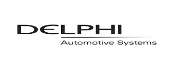

I support manufacturing companies in critical phases: performance decline, restructuring, post-acquisition integration and rapid scaling.
My focus areas include operational turnaround, production performance recovery, plant stabilization and cross-border execution within CEE.
Hands-on leadership. Clear metrics. Measurable results.
